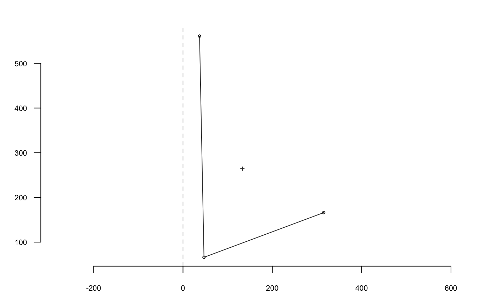

R/coo-shapedescriptors.R
coo_angle_edge1.RdReturns the angle (in radians) defined by a triplet of points either signed ('atan2') or not ('acos').
coo_angle_edge1(coo, method = c("atan2", "acos")[1]) coo_theta3(coo, method = c("atan2", "acos")[1])
| coo | a 3x2 |
|---|---|
| method | one of 'atan2' or 'acos' for a signed or not angle. |
numeric the angle in radians.
coo_theta3 is deprecated and will be removed
in future releases.
Other coo_ descriptors: coo_angle_edges,
coo_angle_tangent, coo_area,
coo_boundingbox, coo_chull,
coo_circularity,
coo_convexity,
coo_eccentricity,
coo_elongation, coo_length,
coo_lw, coo_rectangularity,
coo_rectilinearity,
coo_solidity, coo_tac,
coo_width
#> [1] -0.5930708 -1.2338616 -1.3146603#> [1] -3.062114 2.999696 -2.999696 3.141593 -3.086094 3.132419 3.048323 #> [8] -3.094647 -3.103636 3.056691 3.141593 3.137301 3.050933 -3.141593 #> [15] -3.141593 3.046641 3.141593 3.056691 3.133225 3.141593 3.132419 #> [22] -3.086094 -3.135223 -3.101017 -3.046641 -3.141593 -2.953371 -3.063562 #> [29] -2.888699 -2.741019 -2.871022 -3.039386 -2.958245 3.056691 -3.009322 #> [36] -3.046426 3.094010 -3.094010 -3.094224 -2.958245 -3.128436 -2.878742 #> [43] -2.829598 -2.785870 -2.981043 -3.000954 -3.094010 -3.094010 3.094010 #> [50] 3.141593 -3.046641 3.094224 -3.098516 3.050933 -2.999696 3.094647 #> [57] -3.136876 3.132584 -3.090355 3.099364 3.136876 -3.094647 -3.103636 #> [64] 3.009322 3.141593 3.094010 3.094010 3.141593 3.047279 3.103636 #> [71] 3.133225 3.141593 -3.133225 -3.103636 -3.047279 -2.994341 3.041924 #> [78] -2.999696 -3.017238 -3.043866 -2.965152 3.100520 3.086665 3.061152 #> [85] 3.055913 -3.128436 2.992033 3.094647 3.137301 -3.090355 3.094647 #> [92] -3.136876 3.132584 -3.137301 -3.136876 -3.099364 3.094647 3.137301 #> [99] 2.817190 -2.700353 2.777495 -2.396988 -2.392542 -2.953273 -3.096169 #> [106] -3.094010 3.141593 -3.009322 -2.503801 -1.997834 2.459529 -2.755184 #> [113] 2.999058 -3.094010 3.046641 3.094647 -3.094647 -3.046641 3.046641 #> [120] 3.094647 3.086094 -2.944197 3.046641 -3.137301 3.044031 3.008064 #> [127] -3.111299 3.006422 3.123801 3.122364 -3.100799 -3.040489 -3.008064 #> [134] -3.044031 -3.050933 -3.094010 -3.089507 3.104343